Flat Ride Models
From Theme Park Builder 3D
Welcome to the Flat Ride Page. Here you will find many flat rides either wanted, Works In Progress or Done and in the model repository waiting to become part of Theme Park Builder 3D. For Coaster Rides Models, Other Track Ride Models, Specialty Ride models, Walk-Through, Mobile Shows such as parades, Stage Shows or Ride Add-ons Attractions, please click the title to visit those wiki pages.
This Flat Ride page is for 0-9 and A-M rides. For N-Z rides go here. Flat Ride Models 2
Ride Movement Classification Type
| CA | Catapult |
|---|---|
| RA | Random Movement |
| RO | Roundabout |
| SW | Swing |
| TR | Tracked Flatride |
| VT | Vertical |
| WH | Wheel |
| Ride Name | Ride Type | Modeled By | Status | Image | Construction Set | Ride Footprint | Ride Height |
|---|---|---|---|---|---|---|---|
| Aviator | RO | Star_Ranger4 | Nailed | 
| FRCS | N/A | N/A |
| Alakazaam and Flyaway Rides | RO | Star_Ranger4 | Nailed | 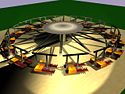 | FRCS | N/A | N/A |
| Austin Fly Plane Ride | WH | Star_Ranger4 | Nailed | 
| FRCS | N/A | N/A |
| Balloon Race | RO | Meph | Nailed | 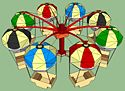 | FRCS | N/A | N/A |
| Barnstormer | RO | Star_Ranger4 | Nailed | 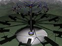 | FRCS | N/A | N/A |
| Breakdance | RO | N/A | Wanted | N/A | FRCS | N/A | N/A |
| Bulgy The Whale | RO | Star_Ranger4 | Nailed | 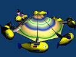 | FRCS | N/A | N/A |
| Bumpercar Tube | RA | Doughnuts/aelk2004 | Nailed | 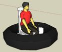 | RRCS | N/A | N/A |
| Bumpercar Modern | RA | Doughnuts | Nailed | 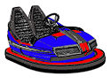 | RRCS | N/A | N/A |
| Bumpercar - Retro 1932 (Dodg'em) | RA | aelk2004 | Nailed | 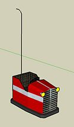 | RRCS | N/A | N/A |
| Bumpercar - Retro 1957 (Dodg'em) | RA | aelk2004 | Nailed | 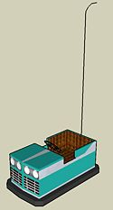 | RRCS | N/A | N/A |
| Bumpercar - Retro 1930 (AutoSkooter) | RA | aelk2004 | Nailed | 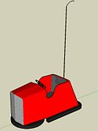 | RRCS | N/A | N/A |
| Bumpercar - UFO Aircar | RA | aelk2004 | Nailed | 
| RRCS | N/A | N/A |
| Carousel - Double Decker | RO | Gadget | Nailed | 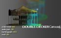 | FRCS | 44 Feet (13.41 m) | 48 Feet (14.63 m) |
| Carousel - Grand | RO | Gadget | Nailed | 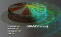 | FRCS | 50 Feet (15.24 m) | 27 Feet (8.23 m) |
| Carousel - Small | RO | Gadget | Nailed | 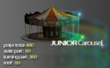 | FRCS | 20 Feet (6.1 m) | 12 Feet (3.66 m) |
| Carousel Standard | RO | Gadget | Nailed | 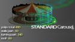 | FRCS | 36 Feet (10.97 m) | 27 Feet (8.23 m) |
| Chance Giant Wheel | WH | WCBoudreaux | Nailed | 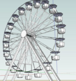 | FRCS | 89 Feet (27.13 m) | 90 Feet (27.43 m) |
| Chance Radar and Turbo | WH | Star Ranger4 | Nailed | 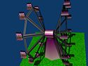 | FRCS | N/A | N/A |
| Chance Skydiver | WH | Star Ranger4 | Nailed | 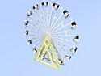 | FRCS | N/A | N/A |
| Chance Tumbler | WH | Star Ranger4 | Nailed | 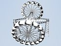 | FRCS | N/A | N/A |
| Chaotic | RO | WCBoudreaux | Nailed | 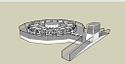 | FRCS | 58 Feet (17.68 m) | 39 Feet (11.89 m) |
| Cobra | RO | Mikey98/Star_Ranger4 | Nailed | 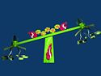 | FRCS | N/A | N/A |
| Crazy Bus | SW | Star Ranger4 | Nailed | 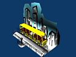 | FRCS | N/A | N/A |
| Crazy Fire Brigade | SW | Star Ranger4 | Nailed | 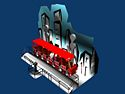 | FRCS | N/A | N/A |
| Crazy Plane | SW | Star Ranger4 | Nailed | 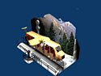 | FRCS | N/A | N/A |
| Crazy Sub | SW | Star Ranger4 | Nailed | 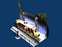 | FRCS | N/A | N/A |
| Crazy Dance | RO | X-Treme Coaster/Star Ranger4 | Nailed | 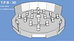 | FRCS | N/A | N/A |
| Diablo | RO | N/A | Wanted | 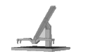 | FRCS | N/A | N/A |
| Disk-O | TR | Star Ranger4 | Nailed | 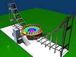 | ORCS | 81 Feet (24.69 m) | 24 Feet (7.32 m) |
| Dive Bomber Ride | RO | N/A | Wanted | N/A | FRCS | N/A | N/A |
| Donner Circle Swing | RO | N/A | Wanted | N/A | FRCS | N/A | N/A |
| Eli Ferris Wheel | WH | WCBoudreaux | Nailed | 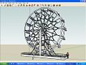 | FRCS | N/A | 65 Feet (19.81 m) |
| Enterprise | RO | Star_Ranger4 | Nailed | 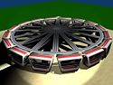 | FRCS | N/A | N/A |
| Eyerly Fly-O-Plane | RO | Star_Ranger4 | Nailed | 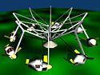 | FRCS | N/A | N/A |
| Eyerly Loop-O-Plane | SW | Star_Ranger4 | Nailed | 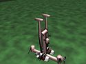 | FRCS | N/A | N/A |
| Eyerly Monster | RO | Star_Ranger4 | Nailed | 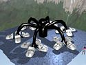 | FRCS | N/A | N/A |
| Eyerly Octopus | RO | WCBoudreaux | Nailed | 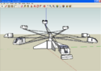 | FRCS | N/A | N/A |
| Eyerly Rock-O-Plane | WH | Star_Ranger4 | Nailed | 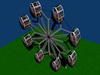 | FRCS | 40 Feet (12.19 m) | 50 Feet (15.24 m) |
| Eyerly Roll-O-Plane | SW | Star_Ranger4 | Nailed | 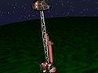 | FRCS | N/A | N/A |
| Eyerly Sidewinder | SW | Star_Ranger4 | Nailed | 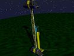 | FRCS | N/A | N/A |
| Eyerly Spider | RO | Star_Ranger4 | Nailed | 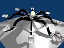 | FRCS | N/A | N/A |
| Eyerly Spider Dual Bucket | RO | Star_Ranger4 | Nailed | 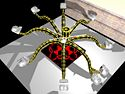 | FRCS | N/A | N/A |
| Fabbri Booster | SW | Star_Ranger4 | Nailed | 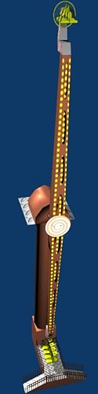 | FRCS | N/A | N/A |
| Flying Circus | SW | Gadget | Nailed | 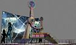 | FRCS | N/A | N/A |
| Flying Elephants | RO | Surfingoz | Nailed | FRCS | N/A | N/A | |
| Flying Scooters | RO | Star_Ranger4 | Nailed | 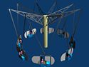 | FRCS | N/A | N/A |
| Giant Wonder Wheel | WH | Vodhin | WIP | 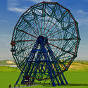 | ORCS | N/A | N/A |
| Graviton | RO | Surfingoz | Nailed | 
| FRCS | 55 Feet (16.76 m) | 47 Feet (14.33 m) |
| High Ride | VT | Star_Ranger4 | Nailed | 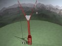 | ORCS | 60 Feet (18.29 m) | 190 Feet (57.91 m) |
| High Roller/Crazy Train | TR | Star_Ranger4 | Nailed | 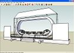 | TRCS | N/A | N/A |
| Himalaya | RO | djfriktion/Surfingoz/Star_Ranger4 | Wanted | 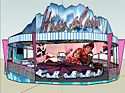 | FRCS | N/A | N/A |
| Huss Boost | RO | Star_Ranger4 | Nailed | 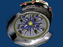 | FRCS | N/A | N/A |
| Huss Condor | VT | Star_Ranger4 | Nailed | 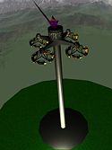 | FRCS | 70 Feet (21.34 m) | 100 Feet (30.48 m) |
| Huss Jump1 | VT | Star_Ranger4 | Nailed | 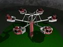 | FRCS | N/A | N/A |
| Huss Jump2 aka. Claw | VT | Star_Ranger4 | Nailed | 
| FRCS | N/A | N/A |
| Huss Skylab | RO | Star_Ranger4 | Nailed | 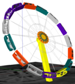 | FRCS | N/A | N/A |
| Huss Takeoff | RO | Star_Ranger4 | Nailed | 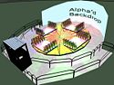 | FRCS | N/A | N/A |
| Intamin Sky Jump/ Sky Cabin combo Ride | VT | GermanTaco | Nailed | 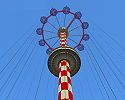 | FRCS | N/A | N/A |
| Keefe Ferris Wheel | WH | Star_Ranger4 | Nailed | FRCS | N/A | N/A | |
| Kiddie Ride Pack | RO | Star_Ranger4 | Nailed | FRCS | N/A | N/A | |
| Intamin Double Wheel | WH | Star_Ranger4 | Nailed | FRCS | N/A | N/A | |
| Intamin Drop Tower | VT | SR3D | Nailed | TRCS | 24 Feet (7.32 m) | 135 Feet (41.15 m) | |
| Intamin AG Flight Trainer | VT | Star_Ranger4 | Nailed | FRCS | N/A | N/A | |
| Intamin Triple Wheel | WH | Star_Ranger4 | Nailed | FRCS | N/A | N/A | |
| Kamikazee | SW | WCBoudreaux | Nailed | FRCS | N/A | N/A | |
| Klaus Satellite Jets | RO | N/A | Wanted | N/A | FRCS | N/A | N/A |
| Mega Disk-O | TR | Star Ranger4 | Nailed | ORCS | N/A | N/A | |
| Moby Dick | SW | Meph | Nailed | FRCS | N/A | N/A | |
| Mondial Splashover | SW | Surfingoz | Nailed | FRCS | N/A | 36 Feet (10.97 m) | |
| Moonraker | RO | Wanted | FRCS | N/A | N/A | ||
| Music Express | RO | djfriktion | Abandoned | FRCS | N/A | N/A |

{kind=link}
{kind=link}
{kind=link}
{kind=link}
{kind=link}
{kind=link}
{kind=link}
{kind=link}
{kind=link}
{kind=link}
{kind=link}
{kind=link}
{kind=link}
{kind=link}
{kind=link}
{kind=link}
{kind=link}
{kind=link}
{kind=link}
{kind=link}
{kind=link}
{kind=link}
{kind=link}
{kind=link}
{kind=link}
{kind=link}
{kind=link}
{kind=link}
{kind=link}
{kind=link}
{kind=link}
{kind=link}
{kind=link}
{kind=link}
{kind=link}
{kind=link}
{kind=link}
{kind=link}
{kind=link}
{kind=link}
{kind=link}
{kind=link}
{kind=link}
{kind=link}
{kind=link}
{kind=link}
{kind=link}
{kind=link}
{kind=link}
{kind=link}
{kind=link}
{kind=link}
{kind=link}
{kind=link}
{kind=link}
{kind=link}
{kind=link}
{kind=link}
{kind=link}
{kind=link}
{kind=link}
{kind=link}
{kind=link}